건설기계설비기사 (2010-07-25 기출문제)
1과목: 재료역학
1. 그림과 같이 강체 판 BC가 두 개의 탄성 막대 AB 및 CD에 매달려 있다. 100kN의 하중이 작용한 후 강체 판 BC의 방향은? (단, AB의 단면적은 2cm2, CD의 단면적은 1cm2이며, 두 막대의 탄성계수는 모두 200GPa이다.)
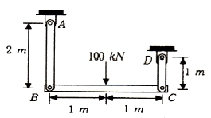
- 수평을 유지한다.
- 약 0.01°만큼 좌측으로 기운다.
- 약 0.001°만큼 우측으로 기운다.
- 약 0.001°만큼 좌측으로 기운다.
(정답률: 알수없음)

2. 다음과 같은 평면 응력 상태에서의 최대(σ1) 및 최소 (σ2)주응력은 몇 MPa인가?
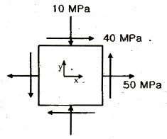
- σ1=70, σ2=-30
- σ1=30, σ2=-70
- σ1=70, σ2=30
- σ1=-30, σ2=-70
(정답률: 알수없음)
3. 균일 단면 외팔보의 자유단을 그림과 같이 스프링으로 지지한 후 100N의 하중을 B점에 작용시켰다. B점에서의 처짐량은 몇 mm인가? (단, 스프링 상수 k=5N/mm, 다면은 b×h=5mm×10mm, 탄성계수 E=200GPa이고 굽힘강성 EI는 일정하다.)
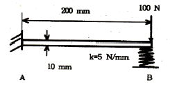
- 1.16
- 1.76
- 2.16
- 2.76
(정답률: 알수없음)
4. 다음 단면에서 도심의 y축 좌표는 얼마인가?
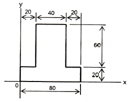
- 30
- 34
- 40
- 44
(정답률: 알수없음)
5. 도심의 축에 대한 단면 2차모멘트가 가장 큰 보의 단면은?
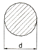
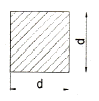
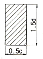
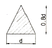
(정답률: 알수없음)
6. 다음과 같이 양단을 고정한 길이 L, 단면적 A의 막대를 △T 만큼 온도를 올렸을 때 막대에 생기는 응력 σ는? (단, 막대의 탄성계수를 E, 선팽창 계수를 α라 한다.)
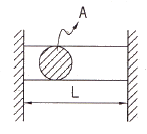
- σ=-Eα△T
- σ=-Eα2△TA
- σ=-Eα△TL
- σ=-Eα△TL2
(정답률: 알수없음)
7. 그림과 같은 볼트에 축 하중 Q가 작용할 때, 볼트 머리부의 높이H는 볼트 지름의 몇 배가 되어야 하는가? (단, 볼트 머리부에서 축 하중 방향으로의 전단응력은 볼트 축에 작용하는 인장 응력의 1/2배까지 허용한다.)
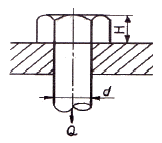
- 1/4배
- 3/5배
- 3/8배
- 1/2배
(정답률: 알수없음)
8. 반지름의 r인 중실축에 토크 T가 작용하고 있다. 작용 토크의 1/3을 지지하는 내부 코어(inner core)의 반지름(r’)을 구하면? (단, 재질은 선형 탄성 균질재이다.)
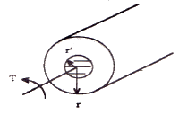
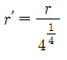
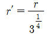
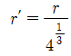
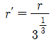
(정답률: 알수없음)
9. 그림과 같은 균일단면을 갖는 부정정보가 단순 지지단에서 모멘트 M0를 받는다. 단순 지지단에서의 반력 Ra는? (단, 굽힘강성 EI는 일정하고, 자중은 무시한다.)
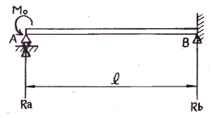
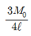
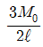
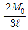
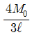
(정답률: 알수없음)
10. 그림과 같은 불균일 분포하중을 부분적으로 받는 균일 단면 보에서 A점의 반력은 몇 kN인가? (단, 보의 자중은 무시하고, 굽힘강성 EI는 일정하다.)
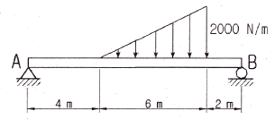
- 1
- 2
- 3
- 4
(정답률: 알수없음)
11. 비틀림 모멘트 T를 받고 봉의 길이 L인 부재에 발생하는 순수전단(pure shear) 상태에서의 비틀림 변형 에너지 U는? (단, 비틀림 강성은 GJ이다.)
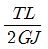
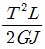
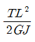
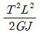
(정답률: 알수없음)
12. 지름이 25mm이고 길이가 6m인 강봉의 양쪽 단에 100kN의 인장력이 작용하여 6mm가 늘어났다. 이 때의 응력과 변형률은? (단, 재료는 선형 탄성 거동을 한다.)
- 203.7MPa, 0.001
- 203.7kPa, 0.001
- 203.7MPa, 0.01
- 203.7kPa, 0.01
(정답률: 알수없음)
13. 그림과 같이 순수굽힘 상태에 있는 AB구간의 균일 단면보에서 굽힘에 의해 생긴 중립면의 곡률은? (단, 보의 굽힘강성 EI는 일정하고, 자중은 무시한다.)
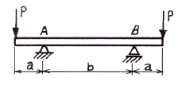
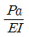
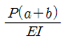
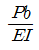
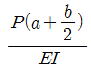
(정답률: 알수없음)
14. 양단이 핀으로 고정되어 있고, 정사각형의 단면 25mm×25mm, 길이 1.8m인 기둥에서 오일러 식에 의한 임계 하중은 몇 kN인가? (단, 탄성계수 E=70GPa이다.)
- 1.30
- 2.60
- 3.47
- 6.94
(정답률: 알수없음)
15. 바깥지름 8cm, 안지름 6cm의 속이 빈 축에 7kNㆍm의 비틀림 모멘트가 작용하고 있다. 이때 발생하는 최대 비틀림 응력을 구하면 약 몇 MPa인가?
- 43.8
- 53.8
- 63.8
- 101.9
(정답률: 알수없음)
16. 집중 모멘트 M을 받고 있는 길이(L) 1m인 외팔보의 최대 처짐량을 1cm로 제한하려면, 최대 집중 모멘트 M은 몇 Nㆍm인가? (단, 단면은 한 변이 10cm인 정사각형이고, 탄성계수(E)는 235GPa이다.)
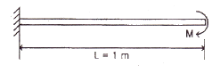
- 24516
- 29419
- 34323
- 39166
(정답률: 알수없음)
17. 길이 L의 균일 단면 막대기에 굽힘 모멘트 M이 그림과 같이 작용하고 있다. 이 막대에 저장된 탄성 변형 에너지는? (단, 막대기의 굽힘강성 EI는 일정하고, 단면적은 A이다.)
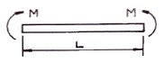
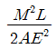
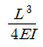
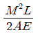
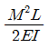
(정답률: 알수없음)
18. 그림과 같은 응력 상태를 모어(Mohr)의 응력원으로 도시하면 어느 것인가? (단, σ2 ＜σ1)
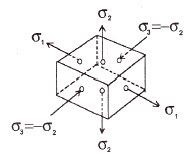
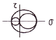
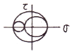
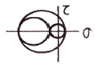
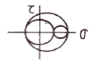
(정답률: 알수없음)
19. 그림과 같은 트러스 구조물에서 B점에서 10kN의 수직 하중을 받으면 BC에 작용하는 힘은 몇 kN인가?
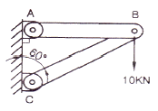
- 20
- 17.32
- 10
- 8.66
(정답률: 알수없음)
20. 그림과 같은 균일 단면 단순보의 일부에 균일 분포하중이 작용할 때 중앙점 C에서의 굽힘모멘트는 몇 kNㆍm인가? (단, 굽힘 강성 EI는 일정하고, 보의 자중은 무시한다.)
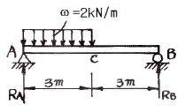
- 5
- 4.5
- 4
- 3.5
(정답률: 알수없음)
2과목: 기계열역학
21. 실린더 내의 유체가 68kJ/kg의 일을 받고 주위에 36kJ/kg의 열을 방출하였다. 내부에너지의 변화는?
- 32kJ/kg 증가
- 32kJ/kg 감소
- 104kJ/kg 증가
- 104kJ/kg 감소
(정답률: 알수없음)
22. 그림에서 T1=561K, T2=1010K, T3=690K, T4=383K인 공기(CP=1.00kJ/kgㆍ℃)를 작동유체로 하는 브레이턴 사이클(Brayton cycle)의 이론 열효율은?
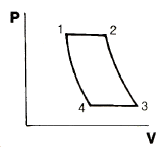
- 0.388
- 0.444
- 0.316
- 0.412
(정답률: 알수없음)
23. 비가역 과정의 요인이 아닌 것은?
- 마찰
- 유한한 온도차에 의한 열전달
- 등온변환
- 기체의 자유팽창
(정답률: 알수없음)
24. 시스템의 경계 안에 비가역성이 존재하지 않는 내적 가역과정을 온도-엔트로피 선도 상에 표시하였을 때, 이 과정 아래의 면적은 무엇을 나타내는가?
- 일량
- 내부에너지 변화량
- 열전달량
- 엔탈피 변화량
(정답률: 알수없음)
25. 질량 유량이 10kg/s인 터빈에서 수증기의 엔탈피가 800kJ/kg감소한다면 출력은 몇 kW인가? (단, 역학적 손실, 열손실은 무시한다.)
- 2000
- 4000
- 6000
- 8000
(정답률: 알수없음)
26. 비열비 k=Cp/Cv의 값은? (단, CP: 정압비열, Cv: 정적비열 이다.)
- 1보다 작다.
- 1보다 크다.
- 1보다 클 수도 있고, 작을 수도 있다.
- 1과 같다.
(정답률: 알수없음)
27. 대기 압력이 0.99MPa일 때 용기 내 기체의 게이지 압력이 1MPa이었다. 기체의 절대 압력은 몇 MPa인가?
- 0.901
- 1.099
- 1.135
- 1.275
(정답률: 알수없음)
28. 카르노사이클로 작동되는 열기관이 200kJ의 열을 200℃에서 공급받아 20℃에서 방출한다면 이 기관의 일은 약 얼마인가?
- 20kJ
- 76kJ
- 124kJ
- 180kJ
(정답률: 알수없음)
29. 이상기체의 비열비(k) 및 기체상수(R)을 정적비열(Cv)과 정압비열(Cp)로 나타낸 것으로 옳은 것은?
- Cp-Cv=k, Cv/Cp=R
- Cv-Cp=k, Cv/Cp=R
- Cp-Cv=k, Cv/Cp=R
- Cp-Cv=k, Cp/Cv=R
(정답률: 알수없음)
30. 실린더 내부에 기체가 채워져 있고 실린더에는 피스톤이 끼워져 있으며 피스톤 위에는 추가 놓여 있다. 초기 압력 100kPa, 초기 체적 0.1m3인 기체를 버너로 압력을 일정하게 유지하며 가열하여 기체 체적이 0.5m3이 되었다면 이 과정 동안 시스템이 한 일은?
- 10kJ
- 20kJ
- 30kJ
- 40kJ
(정답률: 알수없음)
31. 다음 중 이상 Rankine 사이클과 Carnot 사이클의 유사성이 가장 큰 두 과정은?
- 등온가열, 등압방열
- 단열팽창, 등온방열
- 단열압축, 등온가열
- 단열팽창, 등적가열
(정답률: 알수없음)
32. 그림과 같은 Rankine 사이클의 열효율은 얼마인가? (단, h1=191.8kJ/kg, h2=193.8kJ/kg, h3=2799.5kJ/kg, h4=2007.5kJ/kg이다.)
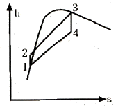
- 30.3%
- 39.7%
- 46.9%
- 93.1%
(정답률: 알수없음)
33. 가역 과정으로 실린더 안의 공기를 50kPa, 10℃상태에서 300kPa까지 압력과 체적의 관계가 “PV1.3=일정”인 과정으로 압축할 때 이상기체로 가정하고 단위질량당 방출되는 열전달량은? (단, 이상기체 공기의 기체 상수는 0.287kJ/kgㆍK이고, 정적비열은 0.7kJ/이다.)
- 17.2 kJ/kg
- 37.2 kJ/kg
- 57.2 kJ/kg
- 77.2 kJ/kg
(정답률: 알수없음)
34. 보일러에 시간당 380000kg의 물을 공급하여 수증기를 생산한다. 공급되는 물의 엔탈피는 830kJ/kg이고, 생산되는 수증기의 엔탈피는 3230kJ/kg이다. 발열량이 32000kJ/kg인 석탄을 시간당 34000kg씩 보일러에 공급한다. 이 보일러의 효율은?
- 22.6%
- 39.5%
- 72.3%
- 83.8%
(정답률: 알수없음)
35. 시스템의 열역학적 상태를 기술하는 데 열역학적 상태량(또는 성질)이 사용된다. 다음 중 열역학적 상태량으로 올바르게 짝지어진 것은?
- 열, 일
- 엔탈피, 엔트로피
- 열, 엔탈피
- 일, 엔트로피
(정답률: 알수없음)
36. 압력이 287kPa일 때 1m3의 공기 질량이 2kg이었다. 이때 공기의 온도(℃)는? (단, 공기의 기체상수 R=287J/이다.)
- 773
- 500
- 400
- 227
(정답률: 알수없음)
37. 열(heat)과 일(work)에 대한 설명으로 틀린 것은?
- 계의 상태변화 과정에서 나타날 수 있다.
- 계의 경계에서 관찰된다.
- 경로함수(path function)이다.
- 전달된 일과 열의 합은 항상 일정하다.
(정답률: 알수없음)
38. 마찰이 없는 피스톤에 12℃, 150kPa의 공기 1.2kg 이 들어있다. 이 공기가 600kPa로 압축되는 동안 외부로 열이 전달되어 온도는 일정하게 유지되었다. 이 과정에서 행해진 일은 약 얼마인가? (단, 공기의 기체 상수는 0.287kJ/kgㆍK이며, 이상기체로 가정한다.)
- -136kJ
- -100kJ
- -13.6kJ
- -10kJ
(정답률: 알수없음)
39. 어떤 냉동기에서 0℃의 얼음 2ton을 만드는데 50kWh의 일이 소요된다면 이 냉동기의 성능계수는? (단, 얼음의 융해잠열은 334.94kJ/kg이다.)
- 1.⑤
- 2.32
- 2.67
- 3.72
(정답률: 알수없음)
40. 600kPa, 300K 상태의 아르곤(argon) 기체 1kmol이 엔탈피가 일정한 과정을 거쳐 압력이 원래의 1/3배가 되었다. 일반기체상수
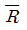
=8.31451kJ/K 이다. 이 과정 동안 아르곤(이상기체)의 엔트로피 변화량은?- 0.782kJ/K
- 8.31kJ/K
- 9.13kJ/K
- 60.0kJ/K
(정답률: 알수없음)
3과목: 기계유체역학
41. 안지름이 2m인 직관 내를 물이 6m/s의 속도로 흐르고 있다. 여기에 재질이 같은 작은 직관을 흐름과 같은 방향으로 직접 연결하여 관내의 유속을 24m/s로 하려면 작은 관의 안지름을 몇 m로 해야 하는가?
- 0.25
- 0.5
- 1
- 1.5
(정답률: 알수없음)
42. 그림과 같은 유동장에서 고정된 윗판이 받는 전단응력의 크기와 방향을 구하면? (단, 속도분포는 선형이라 가정한다.)
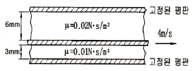
- 26.8Pa, 좌→우
- 13.3Pa, 좌→우
- 0.0268Pa, 우→좌
- 1.013 bar
(정답률: 알수없음)
43. 다음 중 표준 대기압의 값이 아닌 것은?
- 14.7 psi
- 760 mmHg
- 1.033 mAq
- 1.013 bar
(정답률: 알수없음)
44. (r, θ) 극좌표계에서 속도 포텐셜 ø=2θ에 대응하는 원주방향 속도(vθ)는? (단, 속도포텐셜 ø는
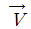
≡øgradø로 정의된다.)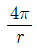
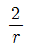
- 2r
- 4πr
(정답률: 알수없음)
45. 지름이 10cm인 원 관에서 유체가 충류로 흐를 수 있는 임계 레이놀즈 수를 2100으로 할 때 층류로 흐를 수 있는 최대 평균속도는 몇 m/s인가? (단, 흐르는 유체의 동점성계수는 1.8×10-6m2/s이다.)
- 3.78×10-3
- 3.78×10-2
- 3.78
- 1.89
(정답률: 알수없음)
46. 바람이 부는 날, 굴뚝에서 나오는 연기 모양을 셔터속도 1/125초로 하여 사진을 찍었다. 이 유동 가시화 사진에서 보이는 연기모양은 다음 중 무엇에 해당하는가?
- 유선(streamline)
- 유적선(pathline)
- 유맥선(streakline)
- 시간선(timeline)
(정답률: 알수없음)
47. 다음 중 기체상수가 가장 큰 기체는?
- 산소
- 수소
- 질소
- 공기
(정답률: 알수없음)
48. 밀도 ρ, 평균 단면적 A인 n개의 액체 분무가 평균 V의 속도로 수직 평판에 충돌할 때 분무로 인하여 평판이 받는 충격력은?
- nV2A
- nρVA
- nρV2A
- n2ρV2A
(정답률: 알수없음)
49. 물 위를 3m/s의 속도로 항진하는 길이 2m인 모형선에 작용하는 조파저항이 54N이다. 길이 50m인 실선을 이것과 상사한 조파상태인 해상에서 항진시킬 때 조파 저항은 약 얼마가 발생하는가? (단, 해수의 비중량은 γp=10075N/m3이다.)
- 867N
- 8825N
- 86kN
- 867kN
(정답률: 알수없음)
50. 압력 항력과 가장 관련이 있는 것은?
- 표면 마찰
- 포텐셜 유동
- 유도 항력
- 후류의 발생
(정답률: 알수없음)
51. 벤투리 유량계(Venturi meter)에 적용되는 두 가지 원리와 가장 관련이 있는 것은?
- 연속 방정식, 베르누이 방정식
- 연속 방정식, 각운동량 방정식
- 운동량 방정식, 에너지 방정식
- 에너지 방정식, 각운동량 방정식
(정답률: 알수없음)
52. 2m×2m×2m의 정육면체로 된 탱크 안에 비중이 0.8인 기름이 가득 차 있고, 위 뚜껑이 없을 때 탱크의 옆 한면에 작용하는 전체 압력에 의한 힘은 약 몇 kN인가?
- 1.6
- 15.7
- 31.4
- 62.8
(정답률: 알수없음)
53. 비중이 0.85이고 동점성계수가 3×10-4m2/s인 기름이 직경 10cm 원관내를 20L/s로 흐른다. 이 원관 100m길이에서의 수두손실은 약 몇 m인가?
- 16.6
- 24.9
- 49.8
- 82.1
(정답률: 알수없음)
54. 그림과 같은 펌프를 이용하여 0.2m3/s의 물을 퍼 올리고 있다. 흡입부(①)와 배출부(②)의 고도 차이는 3m이고, ①에서의 압력은 –20kPa, ②에서의 압력은 150kPa이다. 펌프의 효율이 70%이면 펌프에 공급해야할 동력(kW)은? (단, 흡입관과 배출관의 직경은 같고 마찰 손실은 무시한다.)
- 34
- 40
- 49
- 57
(정답률: 알수없음)
55. 그림과 같은 탱크에서 A점에 표준대기압이 작용하고 있을 때, B점의 절대압력은 약 몇 kPa인가? (단, A점과 B점의 수직거리는 2.5m이고 기름의 비중은 0.92이다.)
- 78.8
- 788
- 179.8
- 1798
(정답률: 알수없음)
56. 직경 D인 구가 점성계수 μ인 유체 속에서, 관성을 무시할 수 있을 정도로 느린 속도 V로 움직일 때 받는 힘F를 D, μ, V의 함수로 가정하여 차원해석 하였을 때 얻는 식은?
(정답률: 알수없음)
57. 평판을 지나는 경계층 유동에서 속도 분포를 경계층 내에서는 , 경계층 밖에서는 u=U로 가정할 때, 운동량 두께(momentum thickness)는 경계층 두께 δ의 몇 배인가?( 단, U=자유흐름 속도, y=평판으로 부터의 수직거리)
- 1/6
- 1/3
- 1/2
- 7/6
(정답률: 알수없음)
58. 물의 체적을 1.5%축소시키는데 필요한 압력은 약 몇 MPa인가? (단, 물의 압축률은 4.75×10-10m2/N이다.)
- 3.16
- 31.6
- 316
- 3157
(정답률: 알수없음)
59. 풍속이 40m/s인 공기(밀도1.2kg/m3)가 갖는 동압은?
- 0.96 Pa
- 9.6 Pa
- 96 Pa
- 960 Pa
(정답률: 알수없음)
60. 직경 D인 수평 원관 내에 어떤 유체가 평균속도 1m/s로 흐를 때 마찰계수가 0.02이었다. 직경 2D인 수평 원관 내에 동일한 유체가 동일한 조건에서 평균속도 2m/s로 흐를 때 마찰계수가 0.01이었다면, 다음 중 원관의 단위 길이당의 압력강하에 대한 설명으로 옳은 것은?
- 직경 D인 원관의 압력강하가 크다.
- 직경 2D인 원관의 압력강하가 크다.
- 두 경우 압력강하가 같다.
- 알 수 없다.
(정답률: 알수없음)
4과목: 유체기계 및 유압기기
61. 스파크 점화기관의 배기가스와 공기-연료비와의 관계를 잘못 설명한 것은?
- 이론 공기-연료비 부근에서 NOx의 배출농도가 최대로 된다.
- CO는 이론 공기-연료비보다 농후 혼합기에서 발생비율이 증가한다.
- HC는 이론 공기-연료비보다 희박 혼합기영역으로 갈수록 급격히 감소한다.
- NOx의 배출농도는 이론 공기-연료비보다 농후 및 희박 혼합기 영역에서 급격히 감소한다.
(정답률: 알수없음)
62. 가솔린기관의 밸브 개폐시기 제어에 대한 설명으로서 옳은 것은?
- 기관이 저속일 경우 밸브 오버랩이 커지면 미연소 탄화 수소의 배출량이 증가한다.
- 기관이 저속일 경우 밸브 오버랩이 커지면 기관 부조 현상이 줄어든다.
- 기관이 고속일 경우 흡기밸브의 열림 지속 기간이 길어지면 출력이 감소한다.
- 역화 현상을 방지하기 위해서는 흡기밸브가 빨리 열릴수록 좋다.
(정답률: 알수없음)
63. 디젤기관에서 히트 레인지식 예열장치는 주로 어떤 형식의 연소실에 사용되는가?
- 직접분사실식
- 와류실식
- 예연소실식
- 공기실식
(정답률: 알수없음)
64. 그림의 가스 터빈 사이클에서 연소과정은 어느 구간인가?
- 1-2
- 2-3
- 3-4
- 4-1
(정답률: 알수없음)
65. 내연기관의 크랭크축과 베어링의 마멸을 촉진시키는 내용이다. 가장 관계가 적은 것은?
- 연료 중의 황성분의 과다
- 윤활유 내에 알카리 성분량이 과다
- 냉각수 온도의 저하
- 흡입 공기 여과기능의 불량
(정답률: 알수없음)
66. 디젤기관 연소과정 중 가장 긴 시간이 소요되는 과정은?
- 착화지연기간
- 무제어연소기간
- 제어연소기간
- 후 연소기간
(정답률: 알수없음)
67. 가솔린 600cc를 연소시키기 위하여서는 몇 kgf의 공기가 필요한가? (단, 혼합비는 15, 가솔린 비중은 0.72이다.)
- 6.00
- 6.12
- 6.48
- 6.75
(정답률: 알수없음)
68. 압축비가 5인 오토사이클에 있어서 압축비가 6.5로 되었다면 이론 열효율은 약 몇 배가 되는가? (단, K=1.4이다.)
- 2.91
- 1.94
- 1.31
- 1.11
(정답률: 알수없음)
69. 가솔린기관의 노크 발생 원인에 대한 설명 중 틀린 것은?
- 압축비가 너무 높을 때
- 점화시기가 너무 빠를 때
- 기관이 과냉 되었을 때
- 옥탄가가 낮은 연료를 사용할 때
(정답률: 알수없음)
70. 4행정 사이클 기관의 행정체적이 1.43L이고 출력이 2000rpm에서 25kW이다. 이 기관의 평균 유효 압력은?
- 약 714kPa
- 약 1049kPa
- 약 918kPa
- 약 102kPa
(정답률: 알수없음)
71. 압력 6.86MPa, 토출량이 50L/min, 회전수 1200rpm인 유압펌프가 있는데 펌프를 운전하는데 소요 동력이 7kW이라면 펌프의 효율은 약 몇 %인가?
- 65%
- 77%
- 82%
- 87%
(정답률: 알수없음)
72. 축압기(accumulator)의 기능이 아닌 것은?
- 맥동 제거
- 충격압력의 흡수
- 최고압력 제한
- 압력보상
(정답률: 알수없음)
73. 그림의 회로를 사용하여 실린더에 큰 힘을 얻고자 할 때 급속 이송이 끝나 실린더가 작업을 시작하면 회로의 압력이 상승함으로 저압 대용량 펌프는 무부하 밸브에 의하여 자동적으로 무부하 운전이 되는데 이런 회로를 무엇이라 하나?
- Hi-Lo 회로
- 압력 설정 회로
- 단락 회로
- 블리드 오프 회로
(정답률: 알수없음)
74. 1개의 유압 실린더에서 전진 및 후진 단에 각각의 리밋스위치를 부착하는 이유로 가장 적합한 것은?
- 실린더의 행정거리를 제한하기 위하여
- 실린더내의 온도를 제어하기 위하여
- 실린더의 속도를 제어하기 위하여
- 유압 장치의 외관을 고려하여
(정답률: 알수없음)
75. 난연성 작동유에 속하며 내마모성이 우수하므로 저압에서 고압까지의 각종 유압 펌프에 사용된다. 또한, 점도지수가 낮고 비중이 크므로 저온에서 펌프 시동 시 캐비테이션이 발생되기 쉬운 유압유는?
- 인산 에스테르형 작동유
- 수중 유형 유화유
- 순광유
- 유중 수형 유화유
(정답률: 알수없음)
76. 유압회로에서 캐비테이션이 발생하지 않도록 하기 위한 방지대책으로 가장 적합한 것은?
- 흡입관에 급속 차단장치를 설치한다.
- 흡입 유체의 유온을 높게 하여 흡입한다.
- 과부하시는 패킹부에서 공기가 흡입되도록 한다.
- 흡입관 내의 평균유속이 3.5m/s 이하가 되도록 한다.
(정답률: 알수없음)
77. 유압 시스템에서 펌프의 마모 및 파손의 원인으로 거리가 먼 것은?
- 작동유의 오염
- 작동유의 높은 점성
- 작동유의 열화
- 작동유의 부적절한 선택
(정답률: 알수없음)
78. 그림의 기호는 어떤 유압 기호인가?
- 서보밸브
- 교축전환밸브
- 파일럿밸브
- 셔틀밸브
(정답률: 알수없음)
79. 일반적인 유압회로 내에서 시스템의 최고압력을 설정하는 밸브는?
- 감압밸브
- 시퀀스 밸브
- 릴리프 밸브
- 카운터 밸런스 밸브
(정답률: 알수없음)
80. 유압장치에서 2개의 실린더를 동일한 속도로 제어하는 시스템을 구성하려고 한다. 이때 적용하는 시스템 회로로 알맞은 것은?
- 카운터 밸런스 회로
- 감속 회로
- 동조 회로
- 중압 회로
(정답률: 알수없음)
5과목: 건설기계일반 및 플랜트배관
81. 버니어캘리퍼스에서 어미자의 최소눈금이 0.5mm이고, 아들자이 눈금방법은 12mm를 25등분 할 때, 최소 측정 값은 몇 mm 인가?
- 0.02
- 0.03
- 0.04
- 0.⑤
(정답률: 알수없음)
82. 용접 시 발생하는 부량(결함)에 해당하지 않는 것은?
- 오버랩
- 언더컷
- 용입불량
- 콤퍼지션
(정답률: 알수없음)
83. 200mm사인바로 10°각을 만들려면 사이바 양단의 게이지블록 높이 차이는 약 몇 mm 이어야 하는가? (단, 경사면과 측정면이 일치함)
- 34.73mm
- 39.70mm
- 44.76mm
- 49.10mm
(정답률: 알수없음)
84. 강의 열처리 중 담금질한 후에 인성(靭性)을 부여하고, 조직을 균질화하기 위해 A1 변태점 이하의 온도에서 하는 열처리는?
- 재담금질(requenching)
- 템퍼링(tempering)
- 어닐링(annealing)
- 노멀라이징(normalizing)
(정답률: 알수없음)
85. 주물사의 구비조건으로 거리가 먼 것은?
- 양호한 성형성
- 양호한 통기성
- 양호한 내화성
- 양호한 열전도성
(정답률: 알수없음)
86. 머시닝센터에 사용되는 준비기능(G code)중 공구 지름 보정(compensation)기능과 무관한 것은?
- G40
- G41
- G42
- G43
(정답률: 알수없음)
87. 피치 5mm인 리드 스크루이 미식(美式) 선반에서 피치 3mm의 나사를 깎을 때 변환기어로 맞는 것은? (단, A는 주축에 연결된 기어 이 수, D는 어미나사에 연결된 기어 이수)
- A = 20, D = 30
- A = 20, D = 40
- A = 20, D = 30
- A = 24, D = 40
(정답률: 알수없음)
88. 산(酸)으로 씻는 것과 유사한 조작으로 적당한 약물 중에 침지(沈漬)시키고, 열 에너지를 주어 화학반응을 촉진시켜 매끈하고 광택있는 표면을 가공하는 작업은?
- 액체 호닝
- 버핑 가공
- 숏 피닝
- 화학 연마
(정답률: 알수없음)
89. 금속 침투법(metallic cementation)에 속하지 않는 것은?
- 크로마이징(chromizing)
- 칼로라이징(calorizing)
- 실리콘라이징(siliconizing)
- 메탈라이징(metallizing)
(정답률: 알수없음)
90. 프레스(press)작업에서 전단(shearing)가공이 아닌 것은?
- 블랭킹(blanking)
- 코이닝(coining)
- 피어싱(piercing)
- 트리밍(trimming)
(정답률: 알수없음)
91. 견인식 스크레이퍼의 작업거리는 일반적으로 약 몇 m 정도인가?
- 50-500m
- 500-1000m
- 1000-2000m
- 2000m 이상
(정답률: 알수없음)
92. 파일해머의 종류가 아닌 것은?
- 드롭 해머
- 디젤 해머
- 진동 해머
- 탬핑 콤팩트 해머
(정답률: 알수없음)
93. 유압식 셔블계 굴삭기에 사용되는 작업장치 중 작업 반경이 크고 작업장소 보다 낮은 장소의 굴삭에 주로 사용되며 하천 보수나 수중 굴착에 적합한 장치는?
- 파워 셔블
- 드래그라인
- 엑스카베이터
- 클램셸
(정답률: 알수없음)
94. 건설기술관리법에 건설기술자가 건설기술경력증을 불법 대여할 경우 받게 될 벌칙은?
- 1년 이하의 징역 또는 500만원 이하의 벌금
- 건설업 등록 말소
- 5년 이하의 징역 또는 1000만원 이하의 벌금
- 3년 이하의 징역 또는 1000만원 이하의 벌금
(정답률: 알수없음)
95. 불도저의 종류를 블레이드 설치 방식에 의해 분류할 때 여기에 해당되지 않는 것은?
- 스트레이트 도저
- 앵글 도저
- 틸트 도저
- 아스팔트 도저
(정답률: 알수없음)
96. 다이렉트 드라이브 변속기가 장착된 무한궤도식 불도저가 작업중에 과부하로 인하여 작업속도가 급격히 떨어졌으나 엔진 회전 속도는 저하되지 않았다고 하면 우선 점검할 장치는?
- 내연 기관(engine)
- 메인 클러치(main clutch)
- 변속기(transmission)
- 최종 구동장치(final drive system)
(정답률: 알수없음)
97. 강판제의 중공(中空) 드럼의 외주에 여러개의 돌기가 있으며, 주로 피견인식이 많이 사용되는 롤러(Roller)는?
- 탬핑 롤러
- 머캐덤 롤러
- 타이어 롤러
- 진동 롤러
(정답률: 알수없음)
98. 불도저에서 견인 마찰계수를 0.3, 차량의 자체 중량이 4.5톤(ton)이라 할 때 견인력은 몇 kgf인가?
- 1150
- 1350
- 1550
- 2150
(정답률: 알수없음)
99. 크레인용 케이블의 설명으로 맞는 것은?
- 와이어 로프는 보통 클립에 의한 고정법과 소켓에 의한 고정법을 사용한다.
- 와이어 로프 꼬임 방향은 Z꼬임(오른꼬임)과 S꼬임이 있으며, Z꼬임은 특별한 경우 사용한다.
- 와이어 로프는 직경대비 17% 이상 감소하면 교환한다.
- 와이어로프에는 CG 또는 GAA를 주로 주유하여 사용한다.
(정답률: 알수없음)
100. 아스팔트 믹싱플랜트의 생산능력 단위는?
- m2/h
- m3/h
- m3
- ton/s
(정답률: 알수없음)